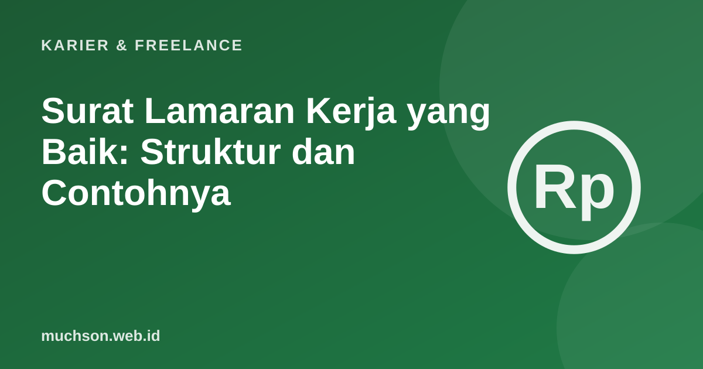

Beranda › Artikel › Karier & Freelance
Karier & FreelanceSurat Lamaran Kerja yang Baik: Struktur dan Contohnya
Surat lamaran kerja sering diperlakukan sebagai formalitas: disalin dari templat, diganti nama perusahaannya, lalu dikirim. Recruiter bisa merasakannya. Surat lamaran yang baik singkat, spesifik, dan menjawab satu pertanyaan: kenapa Anda cocok untuk posisi ini di perusahaan ini?

Struktur empat paragraf
Contoh surat lamaran (bahasa Indonesia)
Hal: Lamaran Posisi Admin Media Sosial
Yth. Tim Rekrutmen PT Kopi Nusantara,
Saya ingin melamar posisi Admin Media Sosial yang diumumkan di situs karier perusahaan pada 20 Oktober 2026. Selama dua tahun terakhir saya mengelola akun Instagram tiga UMKM kuliner di Malang, dan salah satunya tumbuh dari 1.200 menjadi 9.800 pengikut dalam setahun.
Dalam pekerjaan tersebut, saya menyusun kalender konten bulanan, memotret dan menyunting foto produk, serta membaca data insight untuk menentukan jam unggah terbaik. Saya juga terbiasa membalas pesan pelanggan dengan cepat dan ramah, yang membantu meningkatkan pesanan lewat DM.
Saya tertarik pada PT Kopi Nusantara karena komitmennya bekerja langsung dengan petani kopi lokal. Saya ingin membantu menyampaikan cerita para petani itu kepada pelanggan muda lewat konten yang jujur dan menarik.
Bersama surat ini saya lampirkan CV dan tautan portofolio. Saya berharap dapat berdiskusi lebih lanjut dalam wawancara. Terima kasih atas waktu dan perhatian Bapak/Ibu.
Hormat saya,
Dina Pratiwi
0812-xxxx-xxxx · dina@contoh.id
Perhatikan: ada angka nyata (1.200 menjadi 9.800 pengikut), keahlian spesifik, dan alasan memilih perusahaan yang tidak bisa disalin ke lamaran lain.
Versi email singkat
Banyak lowongan meminta lamaran lewat email. Di sini, isi email bisa berupa versi singkat surat lamaran:
Subjek: Lamaran Admin Media Sosial - Dina Pratiwi
Yth. Tim Rekrutmen PT Kopi Nusantara,
Saya melamar posisi Admin Media Sosial. Selama 2 tahun saya mengelola akun Instagram 3 UMKM kuliner, salah satunya tumbuh dari 1.200 menjadi 9.800 pengikut dalam setahun.
CV dan portofolio terlampir. Saya berharap dapat berdiskusi lebih lanjut.
Terima kasih,
Dina Pratiwi
0812-xxxx-xxxx- Subjek jelas: posisi dan nama.
- Lampiran dalam PDF dengan nama berkas rapi, misalnya
CV_Dina_Pratiwi.pdf. - Gunakan alamat email yang profesional.
- Kirim dari email sendiri, bukan email kantor tempat bekerja sekarang.